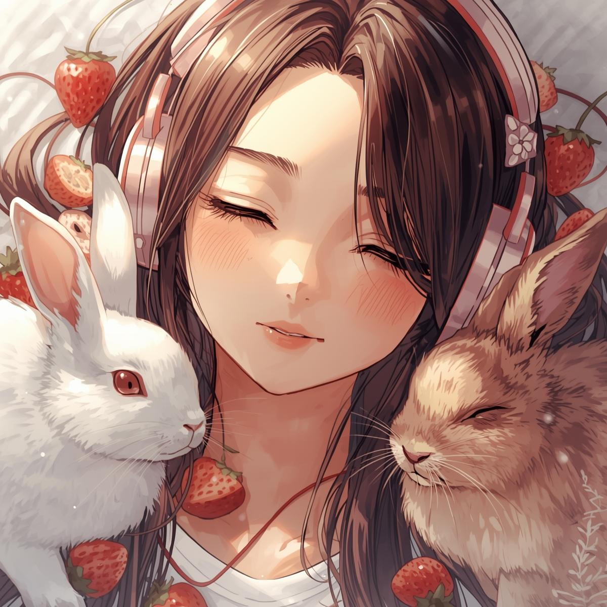

🍓
Bonjour et bienvenue sur le site de la chaine Strawbunny Tunes. Ici, vous trouverez le best of des musiques de ma chaine,
ainsi les different youtubeurs qui m'ont inspiré et motivé à commencer mes vidéos.
J'ai commencé cette chaine le 8 septembre 2024, après avoir regardé pendent plusieurs heures des vidéos de nightcore AMV.
J'ai donc publié ma première vidéo, avec un anime que j'avais récemment regardé.
Peu de temps après m'être lancé dans la création de mes propres nightcores, j'ai partagé une vidéo qui a suscité nettement plus d'intérêt que les précédentes. Cette vidéo reste, même aujourd'hui, celle qui a le plus de succès auprès des spectateurs.
Je me suis inspirée de plusieurs chaines :
1 : Louvina AMV
Cette youtubeuse est l'une des premières à m'avoir fait découvir la musique nightcore, et m'a finalement aidé à promouvoir ma chaine en ajoutant des commentaires sur mes vidéos et en publiant un article sur sa propre chaîne mettant en avant l'une de mes vidéos.
2 : Mitsu Mangas
C'est LA youtubeuse de nightcore, mais je trouve que ses vidéos ont perdu en qualité depuis qu'elle utilise l'intelligence artificielle...
Pour conclure, la chaîne Strawbunny Tunes représente pour moi un projet créatif important, né de ma passion pour la musique et les animes. Ce projet m’a permis de développer mes compétences en sciences numérique et téchnologique, tout en partageant un univers qui me tient à cœur.
